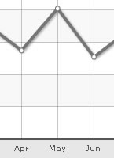
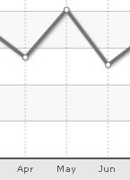
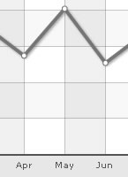

XML Attributes for Vertical divisional lines |
||||||||||||
Vertical divisional lines are vertical lines running through the canvas in a line/area chart. They help in relating the data to its respective label, when there is large amount of data. You can put vertical div lines in your chart by using the numVDivLines attribute. |
||||||||||||
<chart numVDivLines='10'> |
||||||||||||
|  | ||||||||||||
| Customizing the looks of the vertical divisional lines | ||||||||||||
| You can customize the looks of the vertical divisional lines using the following attributes: | ||||||||||||
|
||||||||||||
| Dashed divisional lines | ||||||||||||
The vertical divisional line can be made dashed using vDivLineIsDashed='1'. The dash properties - dash length and dash gap can be customized using the vDivLineDashLen & vDivLineDashGap attributes respectively. |
||||||||||||
| <chart numVDivLines='10' vDivLineIsDashed='1' vDivLineDashLen='2' vDivLineDashGap='2' ...> | ||||||||||||
| The chart with the above properties would lookas under: | ||||||||||||
|  | ||||||||||||
| Alternate Vertical Grid Bands | ||||||||||||
| The vertical grid bands appear alternately between the vertical divisional lines. They can be displayed by setting showAlternateVGridColor='1'. | ||||||||||||
| <chart showAlternateVGridColor='1' ...> | ||||||||||||
| The chart with the alternate vertical grid bands would look as under: | ||||||||||||
|  | ||||||||||||
| Customizing the vertical grid bands | ||||||||||||
| The color and alpha of the alternate vertical grid bands can be customized using the alternateVGridColor and alternateVGridAlpha attributes respectively. | ||||||||||||
| <chart showAlternateVGridColor='1' alternateVGridColor='D9E5F1' alternateVGridAlpha='100'...> | ||||||||||||
| Using Styles to animate alternate vertical grid bands | ||||||||||||
| Animation effects can be applied to the alternate vertical grid bands using STYLES. The following XML would animate the y-Scale and the alpha of the horizontal grid bands. | ||||||||||||
<chart caption='Quarterly Sales Summary' subcaption='Figures in $' xAxisName='Quarter' yAxisName='Sales' showValues='0' numVDivLines='2' showAlternateVGridColor='1'> |